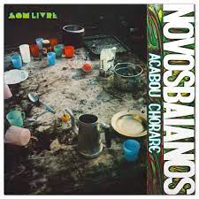
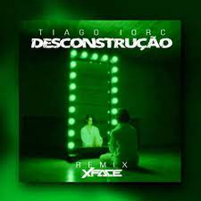
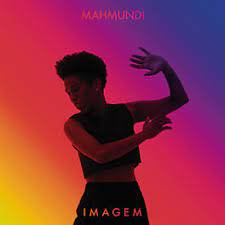

A MPB, sigla derivada da expressão Música Popular Brasileira, é um gênero musical surgido no Brasil em meados da década de 1960.[1] A MPB surgiu a partir de 1966 na cidade do Rio de Janeiro com a segunda geração da bossa nova, mas com uma forte influência do folclore brasileiro que já vinha desde 1932.[2] Na prática, a sigla MPB anunciou uma fusão de dois movimentos musicais até então divergentes, a bossa nova e o engajamento folclórico dos Centros Populares de Cultura da União Nacional dos Estudantes
O nome MPB pode, em determinados momentos, criar confusão por aparentemente se referir a qualquer música popular do Brasil, porém é importante diferenciar MPB - o estilo musical - de outros, como o samba, o choro, a bossa nova etc. Apesar de todos terem ligações, não são a mesma coisa. Assim como a bossa nova, a MPB foi uma tentativa de produzir uma música brasileira "nacional" a partir de estilos tradicionais. A MPB teve um impacto considerável na década de 1960, em grande parte graças a vários festivais de música na televisão.
A Jovem Guarda e a Tropicália são movimentos musicais que fazem parte da MPB, mas a Tropicália se identificou mais com a MPB do que a Jovem Guarda devido as misturas de ritmos nacionais com as internacionais.
Tropicalia
Chico Buarque
João Gilberto
Novos baianos
Ao longo dos anos novos artistas foram surgindo e o que era conhecido antes como MPB foi sendo mudado. Atualmente, estamos vivendo em uma fase desse estilo músical nomeado como "nova mpb".Vejamos os nomes de alguns desses artistas.
Trevo (tu) - AnaVitória e Tiago Iorc
Me espera - Sandy e Tiago Iorc
Desconstrução - Tiago Iorc
Ouvi dizer - Melim
Azul - Mahmundi
Além de contribuir para a cultura do país, a Música Popular Brasileira também teve uma importância muito grande para a criação e manutenção de diversos movimentos sociais. Por esse motivo, além de um movimento artístico e cultural, a MPB também pode ser classificada como um movimento político e social
A MPB, sigla derivada da expressão Música Popular Brasileira, é um gênero musical surgido no Brasil em meados da década de 1960. A MPB surgiu a partir de 1966 na cidade do Rio de Janeiro com a segunda geração da bossa nova, mas com uma forte influência do folclore brasileiro que já vinha desde 1932.
Se a televisão valeu-se dos criadores da MPB para conquistar público e firmar-se no mercado; por seu lado, esses criadores-músicos, através da televisão, tornaram-se conhecidos e tiveram suas canções e ideias divulgadas para públicos massivos.
Mesmo com o nome do gênero dando um sentido bem amplo, a MPB não é qualquer música brasileira presente no Brasil e sim um estilo musical, sendo, portanto, diferente do rock, do pop e do reggae, por exemplo. O termo já era utilizado desde o século XX, mesmo sem fazer referência a grupos musicais ou artistas específicos.
Já o gênero musical MPB (Música Popular Brasileira) é uma referência à produção nacional desenvolvida a partir de um movimento cultural originado após o golpe militar de 1964. A maioria das músicas produzidas no período contestava a ditadura, trazendo questionamentos sobre a situação brasileira de forma poética.
A Música Popular Brasileira, conhecida como MPB, surgiu durante a Ditadura Militar no Brasil, na década de 60, e como uma nova opção de estilo musical, logo após a Bossa Nova. A MPB reflete a reunião de ritmos e movimentos musicais já presentes no país, trazendo um novo conceito de “música nacional”.